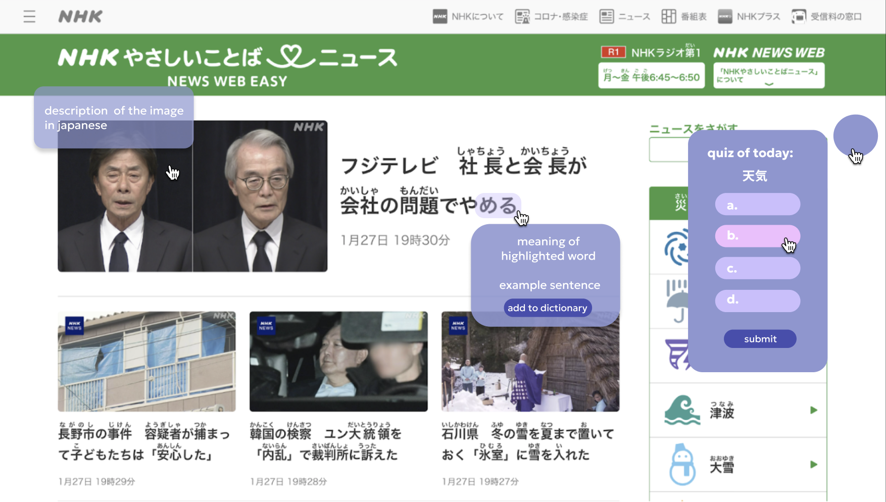

Course: CS344 Human-Computer-Interaction (Winter 2025)
Group: Chloe Xufeng, David Toledo, Emma Zhang, Ian Tarter
Problem addressed: When people use Google Translate, they don’t develop the skills to navigate websites in that language. We aim to create Weblingo, a tool that helps users learn to use foreign-language websites. Unlike Google Translate, which doesn’t teach the language, or Duolingo, which lacks real-world context, WebLingo combines both benefits seamlessly.
This prototype was constructed based on my fictional Inquiry Interview. It addressed participants need of store the new wrods learned, getting context of the word, practice how the language is used (with the description of piocture they suggested), as well as the quiz section that helps memorizing.